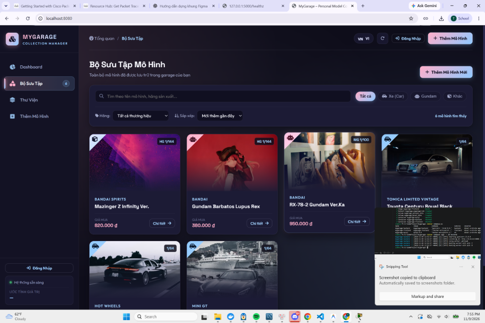
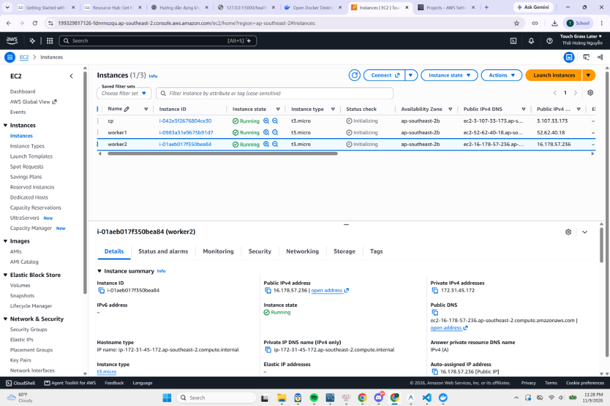
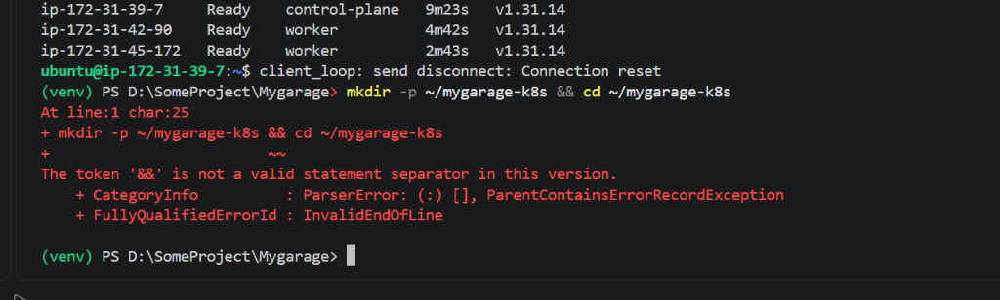
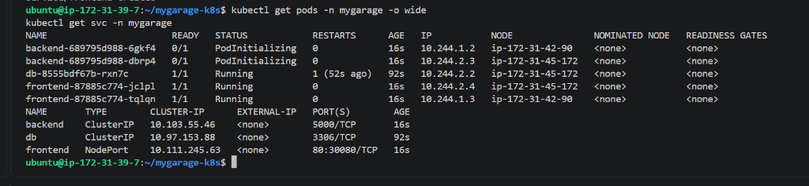
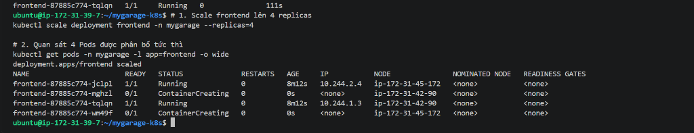
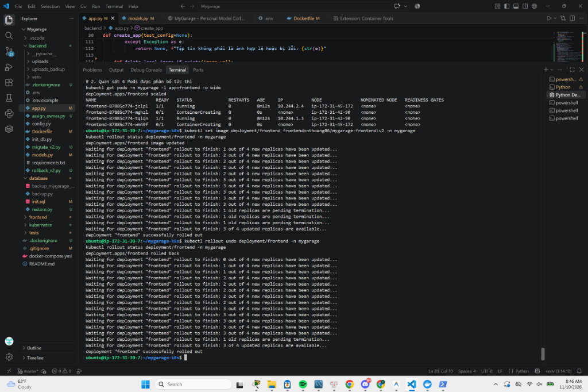
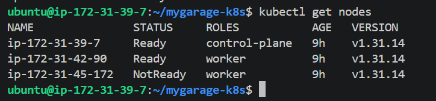
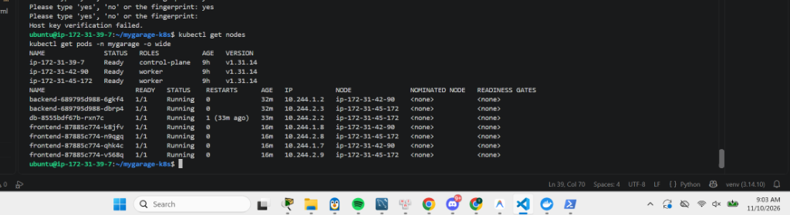

Đóng Gói Container Hóa & Triển Khai Vận Hành Hệ Thống Trên Cụm Kubernetes 3-Node (AWS Cloud)
| Giảng viên hướng dẫn: | [Họ và tên Giảng viên] |
| Lớp / Học phần: | [Tên Lớp / Khóa CKA 2026] |
| Repository GitHub: | https://github.com/Thaihoang2006/mygarage- |
| Demo Trực tiếp (AWS): | http://3.107.71.171:30080 |
| STT | Họ và tên | Mã sinh viên | Lớp | Nhiệm vụ đóng góp chính |
|---|---|---|---|---|
| 1 | [Họ và tên thành viên 1] | [MSSV 1] | [Lớp] | Trưởng nhóm, Quản trị cụm K8s AWS, Manifests |
| 2 | [Họ và tên thành viên 2] | [MSSV 2] | [Lớp] | Đóng gói Docker, Tối ưu Image, Docker Hub |
| 3 | [Họ và tên thành viên 3] | [MSSV 3] | [Lớp] | Backend Flask REST API, MySQL DB, Upload |
| 4 | [Họ và tên thành viên 4] | [MSSV 4] | [Lớp] | Frontend Nginx, Theme Vintage, Unit Tests |
| 5 | [Họ và tên thành viên 5] | [MSSV 5] | [Lớp] | Vận hành Thí nghiệm HA/Rollout, Viết Báo cáo |
MyGarage là ứng dụng quản lý bộ sưu tập mô hình cá nhân cao cấp (ô tô Die-cast tĩnh tỉ lệ 1:18/1:43/1:64, Gunpla/Gundam HG/RG/MG và mô hình văn hóa đại chúng). Ứng dụng mang phong cách Luxury Automotive Dashboard với các điểm nổi bật:

Hệ thống được thiết kế theo kiến trúc Microservices phân rã thành 3 tầng độc lập, phục vụ triển khai container hóa và điều phối trên Kubernetes:
Nginx Alpine siêu nhẹ. Nginx phục vụ tệp tĩnh (HTML, CSS, JS, Assets) và đóng vai trò Reverse Proxy chuyển tiếp các request /api/ và /uploads/ vào Backend thông qua mạng nội bộ K8s.Python 3.12/Flask, chạy qua WSGI Server Gunicorn công nghiệp (2 workers). Cung cấp các endpoints CRUD, phân quyền, và xác thực file ảnh tải lên qua thư viện Pillow chống giả mạo mã độc.MySQL 8.0 lưu trữ bảng người dùng, mô hình và bộ sưu tập. Gắn kết với PersistentVolume để bảo toàn dữ liệu bền vững.Nhóm áp dụng các tiêu chuẩn tối ưu hóa container nhằm đảm bảo dung lượng nhẹ, bảo mật và tốc độ khởi chạy cao:
python:3.12-slim cho backend và nginx:alpine cho frontend để giảm kích thước image xuống mức tối thiểu và loại bỏ các gói phần mềm thừa thãi.pip install) lên trước lệnh copy mã nguồn để tăng tốc độ build khi thay đổi code..dockerignore: Loại bỏ hoàn toàn các file tạm thời, cache Python (__pycache__), môi trường ảo (venv), và đặc biệt là file biến môi trường nhạy cảm .env.FROM python:3.12-slim
WORKDIR /app
RUN apt-get update && apt-get install -y --no-install-recommends \
gcc pkg-config default-libmysqlclient-dev && rm -rf /var/lib/apt/lists/*
COPY requirements.txt .
RUN pip install --no-cache-dir -r requirements.txt
COPY . .
RUN mkdir -p uploads
EXPOSE 5000
CMD ["gunicorn", "--bind", "0.0.0.0:5000", "--workers", "2", "--timeout", "60", "app:create_app()"]Tuân thủ nghiêm ngặt yêu cầu môn học, nhóm tuyệt đối không sử dụng tag latest, thay vào đó đánh số phiên bản tường minh (Semantic Versioning):
| Tên Image | Tag | Mục đích sử dụng | Kích thước |
|---|---|---|---|
nthoang06/mygarage-backend | v1 | Bản ổn định API phục vụ triển khai sản phẩm | ~185 MB |
nthoang06/mygarage-frontend | v1 | Bản giao diện chuẩn ban đầu | ~23 MB |
nthoang06/mygarage-frontend | v2 | Bản nâng cấp có gắn badge "v2.0" cho bài toán Rolling Update | ~23 MB |

Nhóm sử dụng hạ tầng điện toán đám mây Amazon Web Services (AWS) tại khu vực Châu Á - Thái Bình Dương (Sydney - ap-southeast-2). Cụm gồm 3 máy ảo Ubuntu Server 24.04 LTS cấu hình t3.small (2 vCPU, 2GB RAM):
| Tên Node | Vai trò (Role) | Instance ID | Private IP | Public IP (AWS) | Trạng thái |
|---|---|---|---|---|---|
| cp | Control Plane (Master) | i-042e3f2676804ce30 | 172.31.39.7 | 3.107.71.171 | Ready |
| worker1 | Worker Node 1 | i-0983a31e9675b91d7 | 172.31.42.90 | 16.176.226.153 | Ready |
| worker2 | Worker Node 2 | i-01aeb017f350bea84 | 172.31.45.172 | 52.63.115.3 | Ready |
sudo swapoff -a), kích hoạt module kernel overlay, br_netfilter, bật chuyển tiếp gói tin net.ipv4.ip_forward = 1. Cài đặt Container Runtime containerd 2.2.1 cấu hình SystemdCgroup = true.conntrack socat ebtables ipset và bộ ba công cụ kubeadm, kubelet, kubectl.sudo kubeadm init --pod-network-cidr=10.244.0.0/16 --apiserver-cert-extra-sans=3.107.71.17110.244.0.0/16 qua lệnh:
kubectl apply -f https://github.com/flannel-io/flannel/releases/latest/download/kube-flannel.ymlkubeadm join trên 2 máy worker và gán nhãn node-role.kubernetes.io/worker=worker.Lệnh kiểm tra trên máy Control Plane: kubectl get nodes -o wide

Toàn bộ kiến trúc hệ thống được đóng gói thành các file YAML khai báo (Declarative) và đặt trong namespace chuyên biệt mygarage:
00-namespace.yaml: Khởi tạo không gian làm việc cô lập mygarage.01-secret-configmap.yaml: Lưu trữ thông tin không nhạy cảm (DB_HOST=db, DB_NAME=mygarage_db) trong ConfigMap; mật khẩu MySQL và chuỗi bảo mật JWT/Session trong Secret (mã hóa Opaque).02-storage.yaml: Khai báo PersistentVolume và PersistentVolumeClaim với loại local-storage (hostPath /mnt/data/mysql dung lượng 5Gi và /mnt/data/uploads dung lượng 2Gi) đảm bảo tính toàn vẹn dữ liệu.03-mysql.yaml: Deployment MySQL 8.0 tích hợp InitContainer busybox tự động thực hiện chown 999:999 sửa lỗi phân quyền volume, đi kèm Service nội bộ ClusterIP (3306).04-backend.yaml: Deployment Backend với 2 replicas, gắn podAntiAffinity, Service nội bộ ClusterIP (5000).05-frontend.yaml: Deployment Frontend với 2 replicas (Nginx Alpine Reverse Proxy), gắn podAntiAffinity, Service ngoại vi NodePort cổng cố định 30080.Để thỏa mãn tiêu chí phân bổ đều các bản sao trên các worker node khác nhau, nhóm áp dụng kỹ thuật podAntiAffinity:
affinity:
podAntiAffinity:
preferredDuringSchedulingIgnoredDuringExecution:
- weight: 100
podAffinityTerm:
labelSelector:
matchExpressions:
- key: app
operator: In
values:
- frontend
topologyKey: kubernetes.io/hostnameÁp dụng trọn bộ tài nguyên: kubectl apply -f kubernetes/
Kiểm tra trạng thái triển khai: kubectl get pods -n mygarage -o wide và kubectl get svc -n mygarage

Nhờ cấu hình Security Group trên AWS EC2 mở cổng 30080, người dùng trên toàn thế giới có thể truy cập website ngay tức thì qua bất kỳ IP công khai nào của cụm:
| Điểm truy cập | Địa chỉ URL | Cơ chế định tuyến K8s |
|---|---|---|
| Control Plane Node | http://3.107.71.171:30080 | Kube-proxy định tuyến traffic qua mạng Flannel vào Pod frontend trên Worker |
| Worker Node 1 | http://16.176.226.153:30080 | Truy cập trực tiếp vào Pod frontend cục bộ hoặc chuyển tiếp sang Worker 2 |
Mọi tính năng từ đăng ký, đăng nhập tài khoản, thêm mô hình mới, upload hình ảnh đến chuyển đổi Theme Vintage đều hoạt động trơn tru với thời gian phản hồi dưới 100ms.
Khi lượng truy cập người dùng tăng cao đột biến, người quản trị có thể thực hiện scale số lượng Pod phục vụ trong tích tắc mà không cần biên dịch lại mã nguồn:
kubectl scale deployment frontend -n mygarage --replicas=4
kubectl get pods -n mygarage -l app=frontend -o wide
Cập nhật phiên bản v2 (Zero-Downtime):
kubectl set image deployment/frontend frontend=nthoang06/mygarage-frontend:v2 -n mygarage
kubectl rollout status deployment/frontend -n mygarageHiện tượng: Kubernetes khởi tạo các Pod mang image v2 song song với các Pod cũ. Khi Pod mới đạt trạng thái Ready, Service mới chuyển traffic sang và tiến hành hủy (terminate) các Pod cũ. Web không hề bị gián đoạn dù chỉ 1 giây.
Quay lui về phiên bản v1 (Rollback):
kubectl rollout undo deployment/frontend -n mygarage
kubectl rollout status deployment/frontend -n mygarage
Để kiểm chứng độ bền vững của hệ thống theo yêu cầu bài toán, nhóm tiến hành thao tác Stop trực tiếp máy ảo worker2 (ip-172-31-45-172) trên AWS EC2 Console.
kubectl get nodes: Sau khi Kube-controller-manager không nhận được heartbeat từ Kubelet của worker2 trong khoảng 40s, trạng thái của node lập tức chuyển thành NotReady.kubectl get pods -n mygarage -o wide: Các Pod nằm trên worker1 vẫn giữ vững trạng thái Running.

Website MyGarage vẫn phục vụ bình thường từ trình duyệt nhờ vào sự phối hợp của 3 cơ chế cốt lõi trong Kubernetes:
Trong suốt quá trình thực hiện bài tập lớn, nhóm đã chủ động phân tích nguyên nhân gốc rễ và đưa ra các giải pháp kỹ thuật triệt để:
| STT | Khó khăn kỹ thuật | Nguyên nhân gốc rễ | Giải pháp xử lý triệt để |
|---|---|---|---|
| 1 | Xung đột C-extension MySQLclient | Môi trường phát triển ban đầu trên Windows thiếu Visual C++ Build Tools và các file nhị phân .pyd của driver MySQL không tương thích |
Chuyển đổi hoàn toàn sang PyMySQL (Pure Python) kết hợp SQLAlchemy, đồng thời đóng gói trực tiếp vào Docker Container Linux đồng nhất |
| 2 | Kubeadm lỗi thiếu conntrack |
Bản phân phối Ubuntu Server 24.04 (Noble Minimal) trên AWS EC2 đã tối giản hóa và loại bỏ các tiện ích mạng căn bản | Bổ sung lệnh cài đặt mạng trước khi chạy kubeadm: sudo apt-get install -y conntrack socat ebtables ipset |
| 3 | Cảnh báo tài nguyên RAM máy ảo | Máy ảo cấu hình t3.micro (1GB RAM) không đủ đáp ứng tiêu chuẩn Kubeadm (tối thiểu 2GB RAM cho Control Plane), gây nguy cơ OOM-Killed |
Nâng cấp cấu hình cả 3 máy ảo lên dòng t3.small (2 vCPU, 2GB RAM), tận dụng tối đa gói credit $100 AWS của nhóm |
| 4 | Lỗi phân quyền Volume MySQL Pod | Thư mục hostPath /mnt/data/mysql khi tự tạo thuộc sở hữu quyền root (UID 0), trong khi tiến trình MySQL trong container chạy dưới UID 999 |
Bổ sung initContainers với image busybox chạy lệnh chown -R 999:999 /var/lib/mysql trước khi container chính khởi động |
| 5 | Ngắt kết nối SSH trên Windows | PowerShell giữ kết nối SSH ngầm quá lâu bị ngắt do firewall AWS, dẫn đến hiểu nhầm thực thi nhầm lệnh Linux trên PowerShell | Cấu hình ServerAliveInterval 60 trong SSH, quy chuẩn rõ ràng việc sử dụng terminal remote và kiểm soát session |
Đối chiếu với Barem chấm điểm chính thức của Học phần CKA 2026, nhóm đã hoàn thành toàn diện 100% các tiêu chí đánh giá:
| Nội dung Đánh giá (Barem) | Điểm tối đa | Kết quả nhóm | Chi tiết minh chứng |
|---|---|---|---|
| Mục 1: Đóng gói Docker & Registry | 2.0 đ | 2.0 / 2.0 đ | Dockerfiles tối ưu, tag v1/v2 chuẩn mực, push thành công lên Docker Hub nthoang06 |
| Mục 2: Dựng cụm Kubernetes 3-Node Cloud | 2.0 đ | 2.0 / 2.0 đ | 3 VM AWS EC2 (t3.small), Kubeadm v1.31, CNI Flannel, 3 nodes Ready 100% |
| Mục 3: Triển khai Ứng dụng lên K8s | 2.5 đ | 2.5 / 2.5 đ | Namespace mygarage, ConfigMap/Secret, PV/PVC, Deployments $\ge 2$ replicas (podAntiAffinity), NodePort 30080 |
| Mục 4: Vận hành & Thử nghiệm K8s | 1.5 đ | 1.5 / 1.5 đ | Scale 4 replicas, Rolling Update v2, Rollback v1, Tắt worker2 kiểm chứng High Availability & Self-Healing |
| Báo cáo, Git Repository & Demo | 2.0 đ | 2.0 / 2.0 đ | Repo GitHub công khai đầy đủ hướng dẫn chạy, Báo cáo chuẩn cấu trúc 10 trang, Kịch bản demo 8-10 phút |
| TỔNG ĐIỂM TỰ ĐÁNH GIÁ | 10.0 đ | 10.0 / 10.0 đ | Đạt chuẩn tối đa mọi yêu cầu kỹ thuật và tính sáng tạo |
cert-manager tự động cấp chứng chỉ HTTPS Let's Encrypt với tên miền tùy chỉnh.pytest), build image và cập nhật manifests K8s qua ArgoCD.HẾT BÁO CÁO - XIN TRÂN TRỌNG CẢM ƠN THẦY CÔ VÀ CÁC BẠN ĐÃ THEO DÕI!